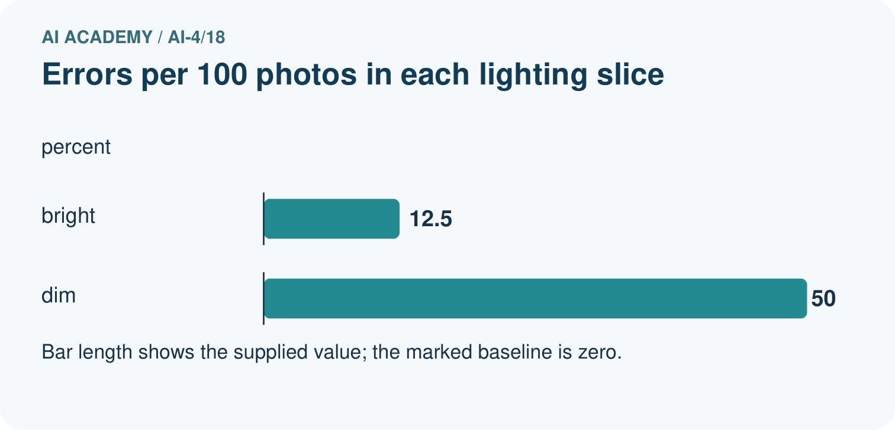
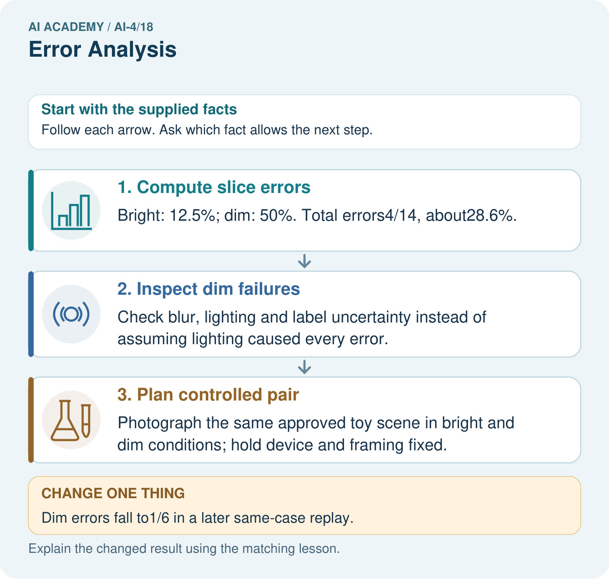

AI Academy · Level 4 · Grade 9 · Week 18 · Teacher guide
Error Analysis
Learn to understand, design, build, test and explain AI systems responsibly.
Project: Responsible Plant Classifier
Teacher guide · 1 of 8
Error Analysis
Teach the learning cycle
Primary target: Categorize development errors using evidence
| Session | Sequence and minutes | Resources |
|---|---|---|
| Session 1 · Understand · 45 min | 0–7: recall and prerequisite; 7–15: inspect the concrete case and predict; 15–30: teacher models the worked trace; 30–40: learners explain a step using the text and visual; 40–45: check the core idea. | Sections 1–6; record the brief recall in the workbook. |
| Session 2 · Practise · 45 min | 0–5: retrieve the procedure; 5–15: W2 completion practice; 15–23: explain and check with a partner; 23–30: each learner answers the misconception check; 30–40: targeted reteaching or a harder variation; 40–45: prepare the investigation. | Sections 7–10; use the matching workbook W2 and misconception check. |
| Session 3 · Investigate and transfer · 45 min | 0–5: retrieve the decision rule; 5–20: investigate or trace; 20–30: start the independent case; 30–38: connect the project; 38–43: act on feedback; 43–45: plan the return check. | Sections 9 and 11–14. Give extra time to finish the full task set; use Section 15 when the week includes a coding lab. |
This is a starting allocation of 135 minutes, not a validated duration. Preserve all named topics. Schedule extra time for connected examples, the full investigation, independent cases and project building. Repeated copies of a case share one recorded attempt; they are not new evidence.
Retrieval answer guidance
Precision and Recall
Without opening the old lesson, explain one key idea from Precision and Recall. Give an example and a mistake that the idea helps you avoid.
Look for: Choose the denominator that answers the question
Reference example, not the only acceptable wording: Teacher explanation: Predicted positives TP+FP=7; reference positives TP+FN=4.
Confusion Matrix
Without opening the old lesson, explain one key idea from Confusion Matrix. Give an example and a mistake that the idea helps you avoid.
Look for: Build a labelled confusion matrix from matched reference and prediction pairs
Reference example, not the only acceptable wording: Reference clear/predicted clear contains V1,V2: 2. Clear/blocked contains V3: 1. Blocked/clear contains V4,V5: 2. Blocked/blocked contains V6,V7,V8: 3. Matrix [[2,1],[2,3]].
Nearest Neighbors
Without opening the old lesson, explain one key idea from Nearest Neighbors. Give an example and a mistake that the idea helps you avoid.
Look for: Compute absolute distances and rank training neighbours
Reference example, not the only acceptable wording: Distances to A,B,C,D,E are 1,1,5,7,9 cm. A and B are equally far from 3 on the numeric feature; their labels do not enter the distance calculation.
Use the student module and workbook section with this exact week title. The worked case, independent question and answers below form one aligned lesson sequence.
What the learner must demonstrate
A model fails 6/10 backlit and 2/20 front-lit photos. Compute error rates and design a follow-up that tests lighting rather than leaf identity.
Concept to explain
Grouping errors by observable conditions connects a metric problem to possible data, label, feature, or model causes.
| Term | Meaning |
|---|---|
| error slice | subset sharing a condition |
| failure cluster | related mistakes with a likely cause |
| root-cause hypothesis | testable explanation for errors |
| controlled repair | one change aimed at one cause |
Prepare the class
Use the supplied scenario, student illustrations and blank paper. For numeric work, offer counters or a calculator after learners show the setup. Fictional records are supplied; personal data and paid accounts are unnecessary.
Allow 80 minutes: recall 8; explanation 12; worked demonstration 15; guided practice 20; independent assessment 15; project and reflection 10. Extend the lab into a second session when needed.
Preparation for the connected explanation
Teach two 45-minute sessions. This week focuses on error analysis and controlled follow-up. Model the worked example first, collect the new W 4 case independently before feedback, and use the fresh retry to check transfer. Award credit for traceable reasoning and bounded claims, including justified uncertainty.
Readiness answer
It counts outcome combinations but does not explain the causes of individual errors.
Printed student lesson and workbook
Paper, pencils and a calculator for fractions
The fictional examples and a blank evidence table
Optional Python 3 editor; no external packages or AI accounts required
End goal for the pictorial case
By the end, I can explain error analysis using a traced example and a stated limitation.
This added worked case illustrates the week’s main idea. Retain all original and connected topics; schedule its practice within the teaching cycle.
Teacher guide · 2 of 8
Explain the mechanism
Explain the mechanism
Trace the information, fitted behavior, and evaluation proof separately.
QUESTION Cluster mistakes and propose cause-specific next tests.
MODEL IDEA Grouping errors by observable conditions connects a metric problem to possible data, label, feature, or model causes.
PROOF NEEDED Use an unseen case, visible calculation, error analysis, and a stated limitation.
UNDER THE HOOD Twelve errors are grouped: 6 low light, 3 blurred, 2 label disagreements, 1 unusual species. Largest cluster suggests a lighting representation problem, not proof of the cause.
Draw a fresh data → model → prediction → evaluation trace:
Predict first. Then check each step. A correct answer without visible evidence cannot be audited.
STEP 1 Twelve errors are grouped: 6 low light, 3 blurred, 2 label disagreements, 1 unusual species.
STEP 2 Largest cluster suggests a lighting representation problem, not proof of the cause.
STEP 3 Collect or transform low-light examples, changing one factor.
STEP 4 Rerun the same evaluation and inspect other slices for regressions.
CHECK Verify the denominator, unit, split, class definition, and data version before interpreting a score.
Recalculate, retrace, or restate the evidence independently:
Concrete teaching case
Four errors occur among five backlit photos; two among twenty ordinary photos.
Compare rates and investigate.
Exact explanation to model
Backlit error=80%; ordinary=10%. Inspect image quality and confounding differences. Association motivates controlled testing; it does not alone prove cause.
Explain the added worked example
Error analysis begins with prediction IDs and reference labels. Inspect features, collection conditions and the labelling policy. Do not assume every surprising prediction proves the reference is wrong. Use development errors to propose a change and specify what outcome would support the explanation.
Use fictional classroom data throughout this investigation. Keep the task, units, reference labels and data split visible as you reason. Earlier weeks supplied the model-building process; this week examines error analysis and controlled follow-up.
A validation audit has 12 dim-light cases with 4 errors and 18 bright-light cases with 3 errors. Rates are 4/12=1/3 and 3/18=1/6. Dim lighting is a useful lead, not proof of causation: camera, route or labels may also differ. A planned change uses a training-fitted brightness normalization while keeping split and classifier settings fixed.
Trace the calculation on paper before running this optional Python check. Use the stated fictional inputs and compare intermediate values. The code checks this example; your independent workbook case uses different evidence.
Key terms
| Term | Meaning |
|---|---|
| Error analysis | Inspection of mistakes to propose explanations |
| Hypothesis | A testable proposed explanation |
| Controlled comparison | A comparison that changes one planned factor while holding relevant conditions fixed |
| Regression | A new failure introduced by a change |
Model the reasoning aloud
Use the complete worked example below before asking learners to complete W2. Reveal a small part, invite a prediction, then explain the deciding step. These teacher notes contain solutions; do not reveal the independent case answer during modelling.
Error analysis and controlled follow-up at a glance
| Thinking move | Teacher prompt |
|---|---|
| Plan | What is given? What is the question? Which procedure fits these facts? |
| Do | Point to each input and intermediate step in the worked trace. Name the rule that allows the next step. |
| Check | Does the output answer the question? Which assumption or limitation prevents a larger claim? |
Use the diagram and verbal explanation together. Ask learners to match a sentence to a specific visual step; do not assign learners fixed visual or auditory learning styles.
A pictorial worked case: Error Analysis
Find an error cluster before choosing a controlled follow-up.
The facts we will use
Candidate errors: bright-light photos1/8; dim-light photos3/6. Images and reference labels are fixed for this audit.
All inputs and outcomes in this worked example are invented classroom data; no real model run is claimed.


Read the picture one step at a time
Why this result follows
Read the picture in order. Photograph the same approved toy scene in bright and dim conditions; hold device and framing fixed. The arrows show which recorded input or intermediate result each decision uses. Explain the deciding step aloud before checking the changed case; pointing to the final answer alone does not show how it follows.
What this example does not establish
A slice difference suggests investigation; it does not establish a causal lighting explanation by itself.
Change one thing in the pictured case
Change: Dim errors fall to1/6 in a later same-case replay.
Prediction: The replay’s dim error rate is 16.7%; it is development evidence if those cases guided the revision.
Reason: Observed improvement on reused cases is not an untouched final generalisation test.
Ask while showing the picture
Cover the result. Ask learners to name the inputs and predict the next step. Uncover one step, connect the icon to the actual procedure, and explain its evidence. Then change the supplied condition and compare. The picture is a representation; it does not document execution of a real AI model.
Teacher guide · 3 of 8
Demonstrate and guide practice
Demonstrate and guide practice
Board sequence
Write the given facts: Four errors occur among five backlit photos; two among twenty ordinary photos.
Write the question to explain: Compare rates and investigate.
Reveal after predictions: Backlit error=80%; ordinary=10%. Inspect image quality and confounding differences. Association motivates controlled testing; it does not alone prove cause.
Keep for an independent attempt: Of eight errors, six are on blurry images and two on clear images. Can you conclude blurry images have a higher error rate without group totals?
Classroom dialogue
Ask: Which facts are given, and which would we have to assume? Learners mark relevant details before discussing answers.
Say: Predict first. Show the rule, information path or calculation that would produce the result. A correct guess is not yet an explanation.
Reveal reasoning one step at a time. Explain why a tempting alternative fails. Write units and denominators for arithmetic, trace conditions for decisions, and identify supporting sources for claims.
In pairs, one learner solves while the other checks evidence; exchange roles. Remove the worked answer before independent assessment.
Model these guided questions
Guided response: No. Other conditions and label quality may differ; it motivates a hypothesis. Exit response: The models are evaluated on different selected records. Apply one documented review policy and compare both on the same versioned set.
Case-specific teaching sequence
| Stage | Teacher action |
|---|---|
| Session 1 start to 7 minutes | Use the prerequisite question: What does a confusion matrix omit? Check the explanation before proceeding. |
| 7 to 18 minutes | Read the opening and model the worked evidence. Ask students to identify error analysis in context. |
| 18 to 32 minutes | Complete W 1 and W 2 with support: find the rates; explain the limit. Require the evidence, not only the final response. |
| 32 to 45 minutes | Read the visual row by row. Collect the guided explanation and compare reasoning in pairs. Trace the Python check after the paper calculation. |
| Session 2 start to 8 minutes | Retrieve the distinction between error analysis and hypothesis. Invite a counterexample to an overconfident claim. |
| 8 to 20 minutes | Discuss the application and complete W 3: Summarize the changed results without hiding a regression. |
| 20 to 35 minutes | Collect W4 independently before giving hints. Assess these outcomes: Categorize development errors using evidence; Design a controlled change with a stated hypothesis. Record any support used. |
| 35 to 45 minutes | Use W 5 and the exit response to assess limits. Give targeted feedback, then the fresh retry. Save evidence of independent understanding. |
Reduce help deliberately
Completion task: Does the difference prove dim light causes model errors?
Teacher check: Teacher explanation: No. Other conditions and label quality may differ; it motivates a hypothesis.
Start by identifying the given inputs together. Leave the intermediate steps blank. If needed, model one step, then withdraw that help on the next step. Move to a full trace only when the partial trace is understood. For partners, alternate explainer and checker; collect a response from every learner before discussion.
Individual reasoning check
Use the worked case for Error analysis and controlled follow-up. Proposed explanation: “A final answer is enough”. Decide whether this explanation is supported. Point to the step or supplied fact that decides; explain your repair if needed.
Expected correction: Ask for the relevant counts, units, procedure or saved record. For this week: Dim 4/12 about 33.3 percent; bright 3/18 about 16.7 percent.
Collect explanations, not only yes/no votes. If a misunderstanding is common, re-model the relevant step for the class. If it affects a few learners, give a short targeted group explanation while others solve a more demanding variation.
Pictorial practice question
What evidence would support the claim that a change helps fresh dim-light images? Point to the relevant step in the picture, then write the changed result and the rule or evidence that supports it.
Reasoned teacher answer
Freeze the revision and test new appropriately labelled dim-light examples, retaining plant groups and comparable conditions. Changed-case check: The replay’s dim error rate is 16.7%; it is development evidence if those cases guided the revision. Observed improvement on reused cases is not an untouched final generalisation test.
Changed-case reasoning: The replay’s dim error rate is 16.7%; it is development evidence if those cases guided the revision. Observed improvement on reused cases is not an untouched final generalisation test.
Collect each learner’s explanation before discussion. Use the first missing connection between input, deciding step and result to choose support. This question is worked-case practice, not fresh mastery evidence.
Teacher guide · 4 of 8
Run the weekly evidence lab
Run the weekly evidence lab
Keep the test conditions fixed, record every result, and change only one planned factor.
1. Write the hypothesis and expected evidence before running.
2. Error Clinic: annotate every wrong prediction, cluster by condition, write hypotheses, and select one measurable next test.
3. Run one normal, one boundary, one missing, and one shifted case.
4. Calculate the metric from raw counts or row-level errors.
5. Interpret what changed, what did not, and what remains unsafe or unknown.
Make the lab runnable
Use the concrete case as the shared normal case and the independent question as a second case. Each pair creates a boundary or missing-information case and predicts its result before testing. Keep the expected result separate from an observed mistake.
| Record | What to capture |
|---|---|
| Input or evidence | Exact data, instruction or claim |
| Expected result | Answer or safe fallback declared before the run |
| Observed result | Actual result, including errors |
| Explanation | Rule, calculation or evidence explaining the outcome |
| Next test | One justified change and a new prediction |
Diagnose and reteach
MISCONCEPTION TO REPAIR Looking closely at one surprising error is enough to diagnose the model.
For guessing, return to given facts and request a trace. For vocabulary without application, use one example and one non-example. For arithmetic errors, check the setup before the calculation. Finish with a different uncoached case before recording mastery.
Address these additional misconceptions
A final answer is enough: Ask for the relevant counts, units, procedure or saved record. For this week: Dim 4/12 about 33.3 percent; bright 3/18 about 16.7 percent.
A stronger claim makes a stronger project: The models are evaluated on different selected records. Apply one documented review policy and compare both on the same versioned set.
The new case can be copied from the example: The independent task changes the evidence. Require a fresh explanation: Total worsens 7/30 to 8/30. A improves 50 to 30 percent, B worsens 10 to 25 percent. Investigate B and keep the original as a comparison; do not claim overall improvement.
Match the support to the first error
| What the response shows | Next teaching action |
|---|---|
| Missing or misread facts | Read the case aloud, mark supplied versus unknown facts, and let the learner restate it. |
| Wrong procedure | Return to the deciding step in the worked case. Contrast it with the proposed incorrect explanation. |
| Arithmetic or implementation error | Trace intermediate values or lines; preserve the first mismatch and retry that step. |
| Correct result without a reason | Ask for a trace and a changed case before marking independent understanding. |
| An unsupported wider claim | Ask which supplied evidence supports the claim and which further observation would be needed. |
Offer an oral explanation, drawing, enlarged visual or fewer examples when that removes a reading/writing barrier. Keep the same reasoning goal. Stretch secure learners by changing a boundary or assumption and asking them to defend the effect, not simply by assigning more of the same questions.
Teacher guide · 5 of 8
Assess and explain the answers
Assess and explain the answers
Worked case answer
Backlit error=80%; ordinary=10%. Inspect image quality and confounding differences. Association motivates controlled testing; it does not alone prove cause.
Independent question
Of eight errors, six are on blurry images and two on clear images. Can you conclude blurry images have a higher error rate without group totals?
Expected independent answer
No. The counts identify a useful investigation, but rates require the total number of blurry and clear examples. Inspect the images and compute each group's denominator.
What counts as evidence
| Criterion | 0 points | 1 point | 2 points |
|---|---|---|---|
| Result | Incorrect or absent | Partly correct | Correct with necessary conditions |
| Reasoning | No supporting trace | Some steps | Clear mechanism, calculation or source support |
| Limit | Overclaims certainty | Vague limitation | Relevant uncertainty or missing fact |
| Transfer | Copies without adapting | Adapts with prompts | Solves a changed case independently |
Use 6/8 as a classroom checkpoint, with 2 required for both Result and Reasoning. This is a proposed teaching rule, not a validated certification threshold. Do not count a coached answer as independent mastery; correct unsafe or unsupported claims regardless of total.
Feedback
Ask the learner to find the evidence that challenges this claim: “More errors in a group automatically means a higher error rate.” Keep the first attempt and an uncoached retry separate.
Original transfer answer
Rates are 60% and 10%. Photograph comparable or paired leaves under controlled lighting while holding device and labels fixed, keeping identity groups out of training/test overlap. The original association motivates the test but does not prove lighting caused every error.
Explanations for the additional workbook examples
W1 Find the rates
Calculate the original error rates by lighting condition.
Teacher explanation: Dim 4/12 about 33.3 percent; bright 3/18 about 16.7 percent.
W2 Explain the limit
Does the difference prove dim light causes model errors?
Teacher explanation: No. Other conditions and label quality may differ; it motivates a hypothesis.
W3 Track regressions
Summarize the changed results without hiding a regression.
Teacher explanation: Total errors 7 to 6; dim 4 to 2 improves, bright 3 to 4 worsens.
W4 Apply independently
Old errors are 5/10 on route A and 2/20 on B. New errors are 3/10 and 5/20. State total and group changes and a justified next step.
Teacher explanation: Total worsens 7/30 to 8/30. A improves 50 to 30 percent, B worsens 10 to 25 percent. Investigate B and keep the original as a comparison; do not claim overall improvement.
W5 Repair a misleading audit
A team removes all disputed records only from the new model report. Why is the comparison invalid?
Teacher explanation: The models are evaluated on different selected records. Apply one documented review policy and compare both on the same versioned set.
Assess independent transfer
Selected case: Old errors are 5/10 on route A and 2/20 on B. New errors are 3/10 and 5/20. State total and group changes and a justified next step.
Selected case answer
Teacher explanation: Total worsens 7/30 to 8/30. A improves 50 to 30 percent, B worsens 10 to 25 percent. Investigate B and keep the original as a comparison; do not claim overall improvement.
| Dimension | Evidence required |
|---|---|
| Explanation | Names the applicable idea or procedure and ties it to the supplied facts. |
| Trace and result | Preserves the given inputs and shows the relevant intermediate steps; distinguishes a prediction from an observed execution. |
| Limits | States the assumptions, missing evidence or conditions under which the result would change. |
Record each dimension as not yet, with support, or independent. Accept a valid alternative procedure with a defensible trace. Do not penalise an honestly recorded model failure if the learner correctly explains its evidence and limits.
Feedback that the learner uses
Name the earliest unsupported step and give one action to repair it. Have the learner make that repair now and explain why. Then assess the relevant skill on a fresh, fully specified case. Confirm it was not previously practised with feedback; solve and check the new case before assigning it. A follow-up design prompt is a starting brief, not automatically an equivalent test.
Teacher guide · 6 of 8
Connect and extend learning
Connect and extend learning
Responsible Plant Classifier
Create the Plant Classifier error log linking case ID, actual, predicted, confidence, condition, likely cause, and next action.
Keep the decision, input, result, explanation and remaining limitation in the project evidence record. Retrieve this record next week rather than restarting the project.
Support and stretch
Use a tiny labelled dataset, explicit units and a named positive class. Stretch: require a baseline, held-out evaluation and subgroup or shifted-condition analysis with denominators.
Exit reflection
Ask for one decision the learner can now justify and one situation requiring more evidence or human review. Confidence ratings are separate from correct independent performance.
Bridge to the next week
Next: Week 19: Regression and Residuals. Retrieve today’s evidence and identify what carries forward and what is new.
Support and fresh reassessment
Provide a blank evidence table and allow a verbal explanation before writing. Highlight the given conditions without supplying the W 4 conclusion. Use error analysis and hypothesis in full sentences. Extension: alter one condition in the worked example and explain which conclusion changes and which remains supported.
For independent W 4, require: Total worsens 7/30 to 8/30. A improves 50 to 30 percent, B worsens 10 to 25 percent. Investigate B and keep the original as a comparison; do not claim overall improvement. Fresh retry: old groups 2/8 and 4/12; new 3/8 and 2/12. Total improves 6/20 to 5/20 while the first group regresses. Require both statements. Mark each criterion as independent, supported or not yet demonstrated. Reassess the reasoning after feedback; do not replace the first attempt silently.
Next week: Regression and residuals. Carry forward the saved evidence and the distinction between development choices and justified claims.
Plan the delayed return
Suggested return points in this level: ai-4/19, ai-4/21, ai-4/24. Use actual classroom dates, adjusting for holidays and gaps. One, three and six teaching weeks are scheduling choices, not a claimed optimal spacing.
At a delayed check, ask for the idea from memory and a changed application. Compare with the earlier independent response and record support used. For a new level, revisit the previous capstone before checking the new prerequisites.
| Record | Teacher evidence |
|---|---|
| Learner code and date | |
| Concept and case used; prior exposure | |
| Explanation / trace / limits | |
| Support and first repair | |
| Changed case and delayed outcome | |
| Next teaching action |
Use the evidence to choose reteaching or the next step. A completed page, confidence rating or attractive project does not by itself demonstrate understanding.
Project evidence from this case
For your Responsible Plant Classifier, save the input, procedure, observed result and limitation of this check. Label this worked example as practice; use a different, previously unreviewed case when checking independent understanding.
Teacher guide · 7 of 8
Prepare, teach and assess
Teaching target: Categorize development errors using evidence
Prepare the labelled worked-case picture, the matching workbook, fictional input cards and a place for individual responses. Check a local Python 3 environment before class; have a paper-trace version ready.
| Session | Plan | Resources |
|---|---|---|
| Session 1 · Understand · 45 min | 0–7: recall and prerequisite; 7–15: inspect the concrete case and predict; 15–30: teacher models the worked trace; 30–40: learners explain a step using the text and visual; 40–45: check the core idea. | Sections 1–6; record the brief recall in the workbook. |
| Session 2 · Practise · 45 min | 0–5: retrieve the procedure; 5–15: W2 completion practice; 15–23: explain and check with a partner; 23–30: each learner answers the misconception check; 30–40: targeted reteaching or a harder variation; 40–45: prepare the investigation. | Sections 7–10; use the matching workbook W2 and misconception check. |
| Session 3 · Investigate and transfer · 45 min | 0–5: retrieve the decision rule; 5–20: investigate or trace; 20–30: start the independent case; 30–38: connect the project; 38–43: act on feedback; 43–45: plan the return check. | Sections 9 and 11–14. Give extra time to finish the full task set; use Section 15 when the week includes a coding lab. |
Before class, solve the supported practice: Does the difference prove dim light causes model errors?
Reasoned practice answer: Teacher explanation: No. Other conditions and label quality may differ; it motivates a hypothesis.
Check every learner before discussion: Use the worked case for Error analysis and controlled follow-up. Proposed explanation: “A final answer is enough”. Decide whether this explanation is supported. Point to the step or supplied fact that decides; explain your repair if needed.
Misconception repair: Ask for the relevant counts, units, procedure or saved record. For this week: Dim 4/12 about 33.3 percent; bright 3/18 about 16.7 percent.
Support: read the exact case aloud, enlarge the labelled picture, supply input cards and model only the first deciding step. Accept a spoken explanation or drawing; retain the reasoning goal.
Extension: Dim errors fall to1/6 in a later same-case replay. Require a prediction and a reason before comparing. Expected result: The replay’s dim error rate is 16.7%; it is development evidence if those cases guided the revision. Reason: Observed improvement on reused cases is not an untouched final generalisation test.
Independent assessment: withhold the reserved answer until the learner has attempted the new case. Record support separately from correctness.
| Criterion | Not yet | With support | Independent |
|---|---|---|---|
| Explanation | Names an answer without a deciding fact | Uses a hint to link fact and decision | Explains the deciding fact in own words |
| Trace or test | Cannot connect input and result | Completes steps with prompts | Traces or tests a changed case accurately |
| Limits and revision | Claims more than evidence supports | Names a limit after a prompt | States a defensible limit and useful next test |
Project checkpoint: Test changed cases. Keep normal, boundary and failure cases; compare expected and observed results.
Use the weekly teacher answer for topic-specific reasoning. A saved progress tick is an activity record; judge mastery from the learner’s explanation and evidence.
Teacher guide · 8 of 8
Use feedback, labs and repair paths
Use the two formative questions as supported practice, not as independent mastery scores. Discuss the deciding evidence rather than accepting a guessed selection.
The feedback comes from the reviewed public worked case. Do not reveal the separately reserved independent teacher answer until the learner has attempted that case.
Ask students to predict before running code. Preserve errors and actual outputs; collect a changed test and an explanation. The branch-boundary and indexing lessons deliberately include failure cases.
Use the earlier worked-explanation links to address a specific missing building block, then return to the current question. Adapt this suggestion after observing the learner; it is not an automatic diagnosis.
Collect the completed-work portfolio as evidence. Record support separately from correctness, and assess explanation, trace/test and limitations. Progress ticks and quiz selections alone do not establish mastery.